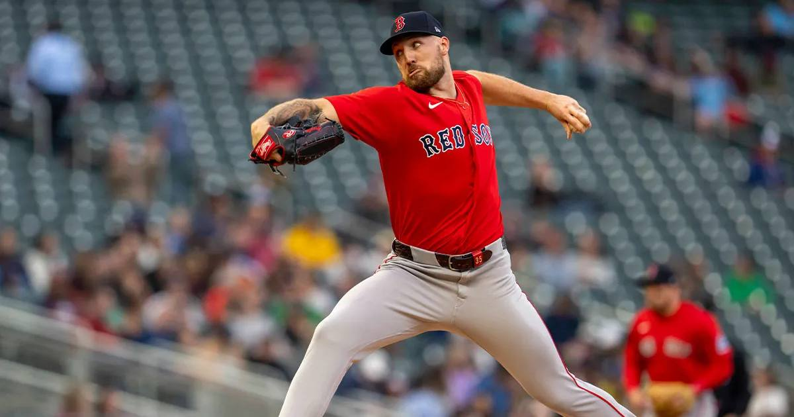

Red Sox want a frontline starter behind Crochet
Craig Breslow says Boston will only add a starter good enough to pitch at the front of the rotation and start a playoff game next to Garrett Crochet — no depth arms, no placeholders.

Disclosure: this post contains affiliate links. I earn a commission on qualifying purchases.
The Red Sox aren't shopping for rotation depth this winter. Craig Breslow said Boston will only add a starter who can pitch at the front of the rotation and start a playoff game alongside Garrett Crochet — a high bar that rules out most of the mid-tier arms on the market.
The message, delivered in MLB.com's Winter Meetings primer, sets up one of the offseason's clearest tests: Boston either lands a real co-ace, or it stands pat with what it has.
Why the bar is that high
Crochet is the ace, but his 2026 season was essentially lost to a shoulder injury. He made only six regular-season starts, going 3-3 with a 6.30 ERA, before shoulder inflammation sidelined him in late April. He returned in a limited bullpen role for the Wild Card Series, but Boston spent five months without its best pitcher — and still made the playoffs.
That context is exactly why Breslow is drawing the line where he is. A back-end innings-eater doesn't change Boston's ceiling. A second frontline arm does, especially with a rotation that currently projects as Crochet, Payton Tolle, Ranger Suarez, Jake Bennett and Brayan Bello — talented, but thin at the top behind a pitcher coming off a lost season.
The urgency is real, too. Sonny Gray left Boston to sign with the Minnesota Twins, removing another veteran arm from the mix. Names already floated as fits include Kevin Gausman, Casey Mize and Nick Martinez, and The Athletic's Jen McCaffrey has suggested former Cubs All-Star Matthew Boyd as a surprise option.
The other hole
Pitching isn't Boston's only problem. The Sox still need a centerpiece bat to replace the power lost when Rafael Devers was traded to the Giants — a gap that was obvious all season. Boston has already struck early this offseason, signing Jake Bauers, but the lineup still lacks the middle-of-the-order thump Devers provided.
Breslow's Winter Meetings approach, then, is two-pronged: a frontline starter who can share the top of the rotation with Crochet, and a bat big enough to anchor the lineup. Either one alone leaves the roster short. Landing both would make Boston a real AL East threat.
Watch
Source: Red Sox next move REVEALED... — Red Sox Digest (YouTube). Breaks down Boston's free-agent pitching targets to replace Sonny Gray, with Crochet leading the projected 2027 rotation.
Sources
• Winter Meetings primer — MLB.com Red Sox Beat
• Red Sox linked to Cubs All-Star, despite lefty-heavy rotation — Sports Illustrated
• Where Red Sox rank in AL East after adding Jake Bauers — Sports Illustrated
Gear up: Fanatics